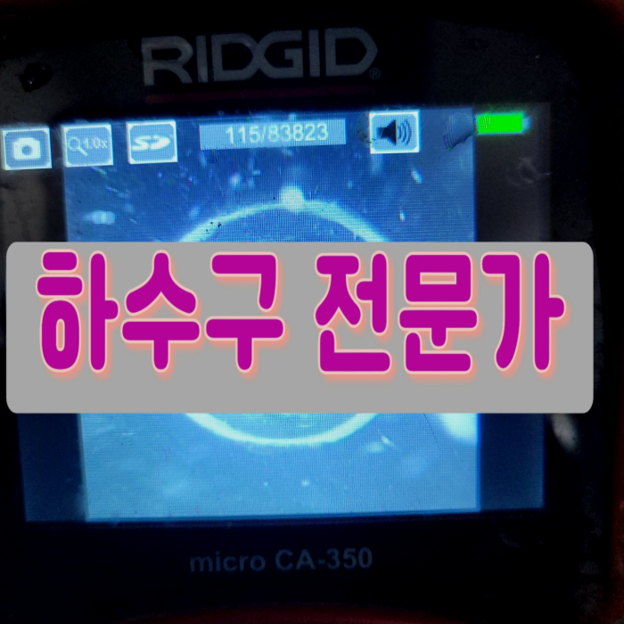
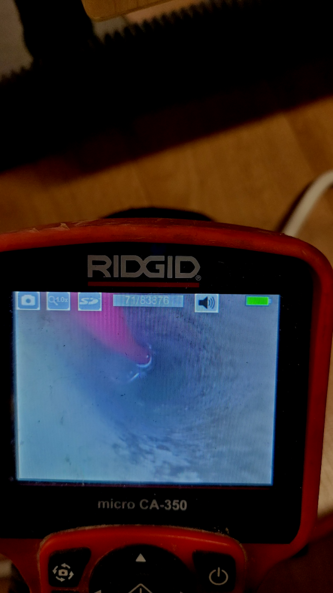
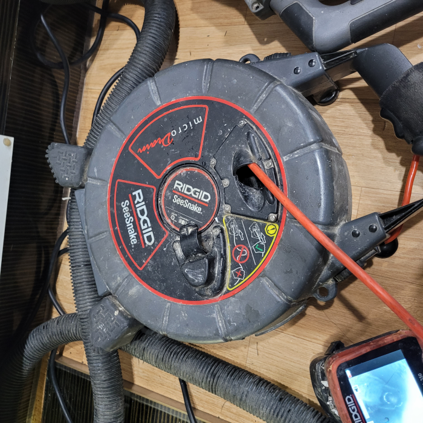
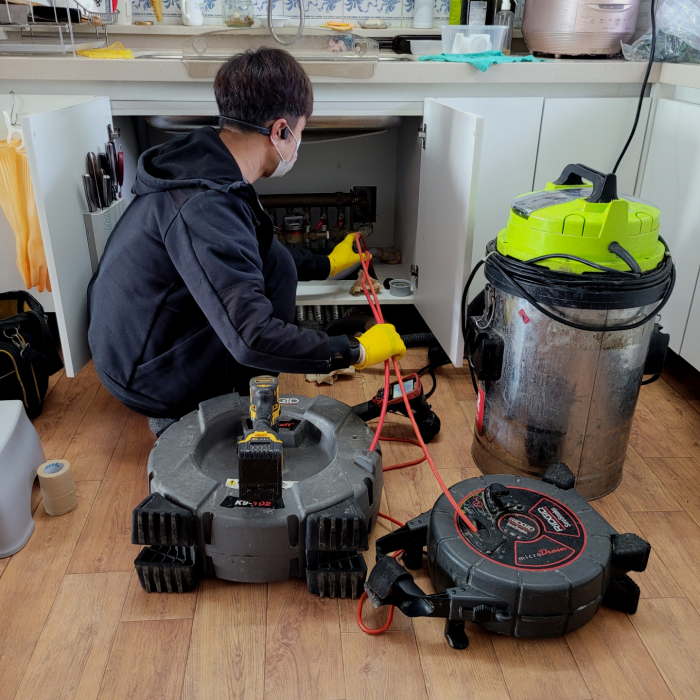
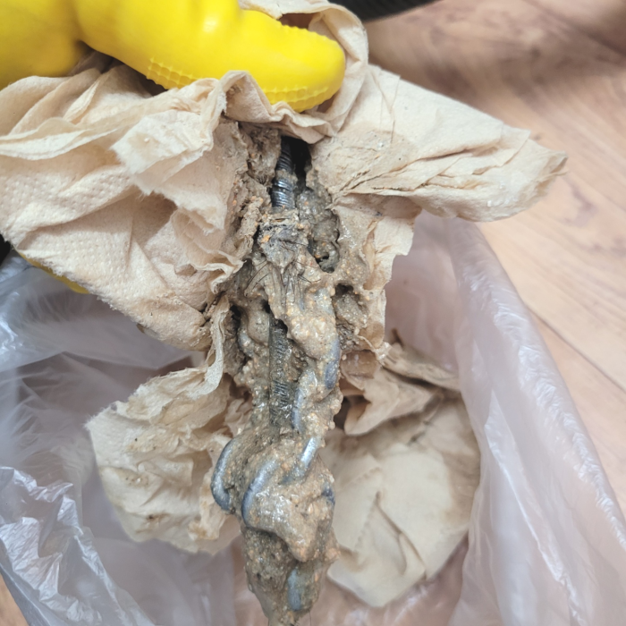
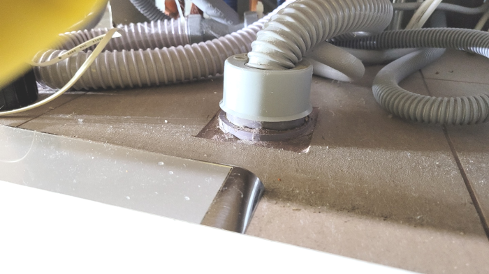
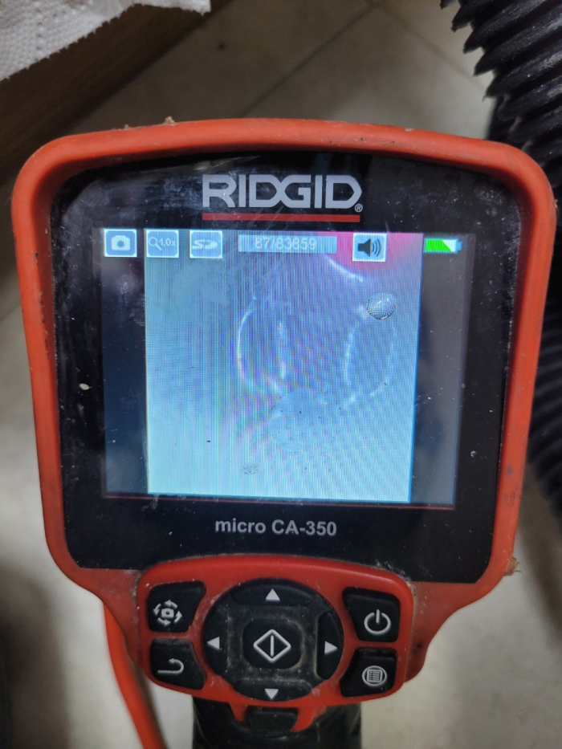

🏠 군포 대야동 씽크대막힘 송부동 주방배수구역류 기름때청소 설비
서울 싱크대막힘 전문 시공 후기

📋 작업 개요
- 위치: 서울
- 서비스 유형: 싱크대막힘, 변기막힘, 하수구막힘, 배관막힘, 역류해결, 뚫는업체, 배관청소, 고압세척
- 작업 일시: 2024. 2. 27. 18:20
- 업체명: 하수구수사대 (010-5615-2118)
🔍 문제 상황
어서오세요
설비전문업체 "하수구수사대"를 찾아주셔서 감사합니다.
군포 대야동 씽크대막힘 송부동 주방배수구역류 기름때청소 설비
하수배관 하수 막힘의 주된 원인 중 하나는 이물질입니다. 식물 잔여물, 기름 슬러지, 머리카락 등이 하수에 쌓여 문제를 일으키는 경우가 많습니다. 이런 이물질은 주기적인 청소를 필요로 하며, 미리 예방하는 습관을 가지는 것이 중요합니다.

🔎 원인 분석
💡 전문가 진단: 군포 대야동 씽크대막힘 송부동 주방배수구역류 기름때청소 설비
믿고 부른 업체가 제대로 뚫었다며 철수했는데 얼마 지나지 않아 똑같은 증상이 재발하는 경우도 어렵지 않게 볼 수 있습니다, 양심적인 배출관업체라면 이럴 때 다시 찾아가서 뚫어주어야 하는 것이 맞습니다.
비용에 대해 궁금하실 경우 현장에 출동한 후 더 자세하게 상담을 받아 보실 수 있도록 현장 방문 상담 서비스도 진행하고 있어요. 하수도 복잡하게 되어 있는 곳이라면 이렇게 방문을 해서 확인해야지만 정확한 비용을 알려 드릴 수 있어요.
업체 선정 시에도 그러한 상황 때문에 서둘러서 내방할 수 있는 곳을 찾게 되실 텐데 저희는 서울 경기 인천 어디든 바로 출동할 수 있는 배출구팀이 존재하기 때문에 한 시간 안으로 도착하여 작업을 해드립니다.
수많은 분들이 업체들을이 이용했어도 또 퇴수구막힘증상이 발생되어 반복적으로 더 돈을 내고 청소하게 되는것을 잘못 지여져 있는게 원인이 아닌 똑바로 세척하지 않은 것 때문입니다.

🔧 작업 과정
혼자 해결하여 원인이 해소되었다면 다행이겠지만 오히려 상황이 악화되는 경우도 많이 있습니다.그렇기 때문에 문제점들이 지속된다면 신속히 배수관막힘뚫음 전문가에게 의뢰하여 해결하시는 게 가장 바람직합니다
이만큼의전문기계라면 단단한석회라도 뚫어버릴수있다고 장담가능한데요.막혀버린상황이되셔서퇴수구기사를 찾고계신다면 가지고있는 장비들을 확인해보시는게 현명해요.싸게살수있는 기계가아니라서 다갖춰져있는데는 흔하지않죠.
하루빨리 하수도뚫는것이 하나밖에없는 대책이란것을 기억하셔야됩답니다.최첨단기계와 많은전문지식을 갖추어진분들로 모여있어서 어디든지 확실하게수리 할수있어요!
그러므로 재발 방지를 위하여 이를 반드시 제거해 주어야 합니다. 배수관배관 상태를 파악하기 위해 싱크대 물을 틀어보았습니다. 이렇게 물을 틀어서 확인해야 싱크대가 뚫어진 것이 맞는지 이상은 없는지 파악할 수 있습니다. 그 후 체크를 위하여 배수관배관 내시경을 보니 아래에 남은 이물질 없이 깨끗하게 제거된 배관을 볼 수 있었습니다.
저희는 해결 작업을 하고 나면 대충 하는 것이 아닌, 고객의 요청에 따라 배수구내시경 카메라를 사용하여 세밀한 조사를 진행합니다. 만약 오수관 작업을 뺀 샤프트 시공이 필요하다면, 이를 거쳐 문제를 해결해 드립니다. 또한, 배수구 고압세척 외에도 배관 내부의 상태를 정확히 파악하기 위해 관로 탐지기를 사용하기도 합니다.
저희가 청소를 얼마나 제대로 했는지 작업을 마무리하고 나서는 고객님께 내시경 화면을 보여드립니다. 밖에서 물을 부어서 배수 테스트도 진행하지만, 구석진 부분에 이물질이 존재하거나 굳은 석회가 있는지 확인하는 건 어렵기 때문에 작업한 후 내시경 장비를 통해서 결과를 세세하게 보고해 드리는데요,
배수관청소를 안 하고 관리가 안된 것처럼 보이는 상가건물이 있다면 주저 없이 배수관배관 청소를 한번 해보세요. 물과 이물질로 더러워진 배수관배관을 청소해 보시면 확실히 바로 아실 수 있습니다. 더욱 좋아진 수압과 악취 없는 화장실로 깨끗한 이미지를 만들 수 있습니다.


✅ 작업 완료
모든 작업을 완료하고 점검에 대한 내용을 상세히 설명해 드리면서 배수구 흐름을 저해할 수 있는 요소가 나타나지 않도록 시설 개선 작업도 함께 해드렸습니다 다양한 원인으로 인해 배수구배관 막힘 문제가 발생할 수 있으므로 항상 신속하게 대처를 하시길 바랄게요!
#하수구막힘 #하수구뚫음 #하수구역류 #씽크대막힘 #싱크대역류 #오수관막힘 #하수구청소 #욕실하수구막힘 #변기막힘 #하수구뚫는비용 #싱크대수리 #화장실막힘




⚠️ 주방 싱크대 배관 막힘 예방 수칙
- ✅ 기름기가 묻은 식기나 프라이팬은 설거지 전 키친타올로 반드시 기름때를 닦아내세요.
- ✅ 주기적으로 싱크대 개수대에 뜨거운 물을 가득 받아 한 번에 내려 배관 내부 기름을 씻어내세요.
- ✅ 배수구 거름망을 미세한 필터로 사용하시고 음식물 찌꺼기가 틈으로 새어 들지 않게 관리하세요.
- ✅ 베이킹소다와 식초를 뜨거운 물과 함께 일주일에 한 번씩 부어주면 배관 살균과 막힘 예방에 좋습니다.
💡 핵심 정리
- 확실한 장비 작업(내시경 점검 및 샤프트 스케일링)으로 원인을 뿌리 뽑습니다.
- 작업 후 1년 이내에 동일한 부위 재발 시 100% 무상 A/S 서비스를 보장합니다.
- 서울 · 경기 · 인천 전 지역에 24시간 언제든 긴급 출동할 수 있도록 항시 대기 중입니다.
❓ 자주 묻는 질문 (FAQ)
🚨 서울 싱크대막힘 문제로 고민이신가요?
정확한 원인 진단과 확실한 시공으로 재발 없는 해결을 약속드립니다.
24시간 긴급 출동 | 서울 · 경기 · 인천 전지역 | 1년 내 재발 시 무상 A/S